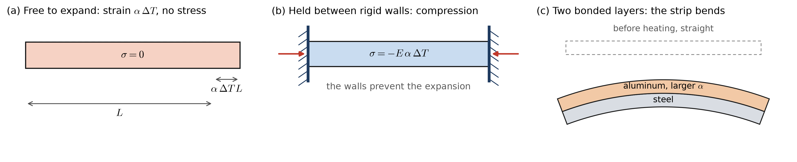
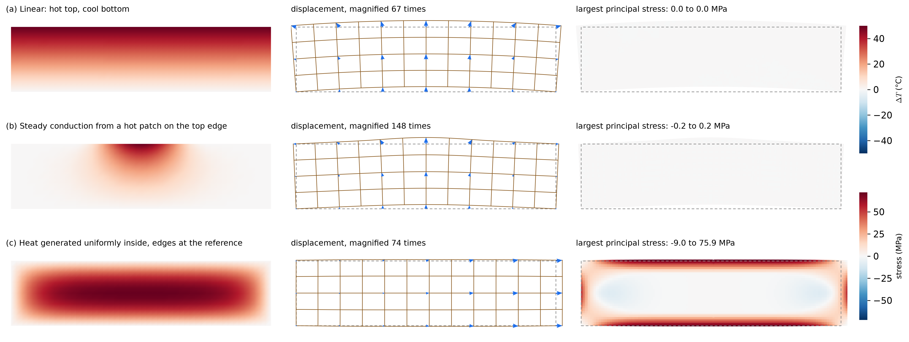
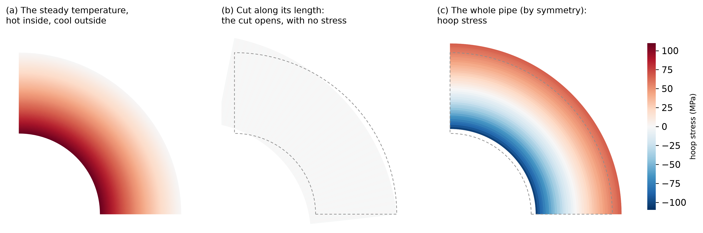
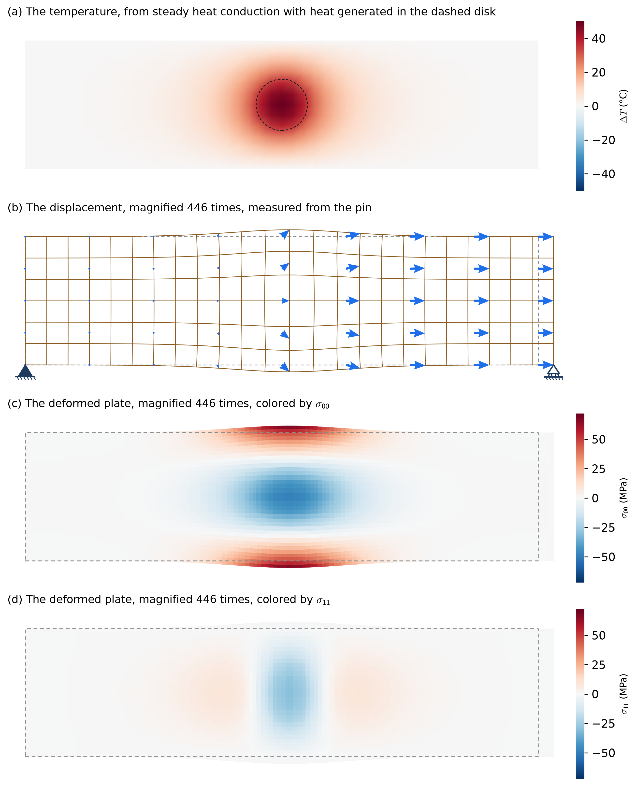
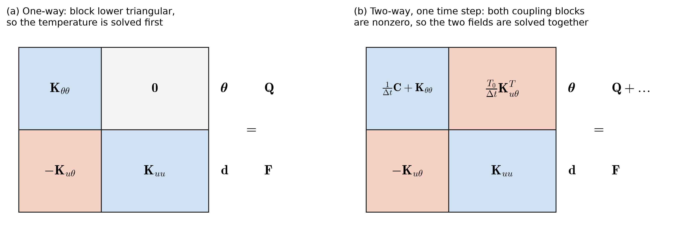
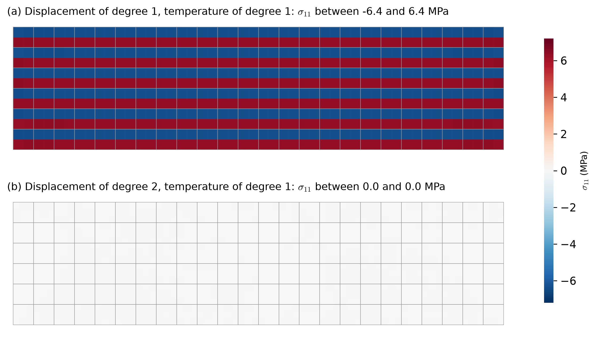

31 Class 31: Thermoelasticity
Thermal expansion and thermal stress, the one-way coupling of heat conduction to elasticity, and when the coupling runs both ways
When the temperature of a body changes, its material expands or contracts. If nothing resists this, the body simply changes size and shape, and it is not stressed. If something does resist it, such as a support, another part of the same body, or a different material bonded to it, the result is a thermal stress. Class 29 showed one case: a uniform rise in temperature causes no stress with statically determinate supports, but can cause large stresses with redundant ones. This class develops the linear theory of thermoelasticity and its finite element implementation, in which the temperature from a heat conduction problem of Classes 19 to 25 becomes the load of an elasticity problem. It then describes when the coupling between the two fields also runs the other way, and where the linear theory stops being adequate.
31.1 Thermal expansion
31.1.1 The coefficient of thermal expansion
A small piece of an isotropic material that is free to move, heated from the temperature \(T_{\mathrm{ref}}\) to the temperature \(T\), stretches equally in every direction, by the thermal strain
\[ \varepsilon^{\theta}_{ij} = \alpha\,\Delta T\,\delta_{ij}, \qquad \Delta T = T - T_{\mathrm{ref}} , \]
and does not shear. The constant \(\alpha\) is the coefficient of linear thermal expansion, and \(T_{\mathrm{ref}}\) is the temperature at which the body is free of stress, such as the temperature at which a structure was built, cast, or welded. The volume grows by \(\varepsilon^{\theta}_{kk} = 3\alpha\,\Delta T\), so \(3\alpha\) is the coefficient of volumetric expansion.
| Material | \(\alpha\) (\(10^{-6}\)/°C) | \(E\) (GPa) | \(E\,\alpha\) (MPa/°C) |
|---|---|---|---|
| Structural steel | 12 | 200 | 2.4 |
| Stainless steel | 17 | 193 | 3.3 |
| Aluminum alloys | 23 | 70 | 1.6 |
| Copper | 17 | 117 | 2.0 |
| Invar (an iron–nickel alloy) | 1.2 | 140 | 0.17 |
| Concrete | 7 to 12 | 30 | about 0.3 |
| Soda-lime (window) glass | 9 | 70 | 0.63 |
| Borosilicate glass | 3.3 | 63 | 0.21 |
| Wood, along the grain | 3 to 5 | ||
| Wood, across the grain | 30 to 50 | ||
| Polyethylene | 100 to 200 | about 1 | |
| Carbon fiber composite, along the fibers | about 0 |
The product \(E\,\alpha\) in Table 31.1 is the stress caused by each degree of temperature change in a bar whose ends are held fixed (Figure 31.1 b), \(\sigma = -E\,\alpha\,\Delta T\). For steel, a rise of 50 °C causes 120 MPa of compression, which is a large fraction of its yield stress. For concrete, a fall of only about 10 °C in a restrained slab causes about 3 MPa of tension, which is enough to crack it, and this is why slabs and pavements are built with joints.
Many choices made in engineering are in part because of consequences from Table 31.1. Reinforced concrete works in part because steel and concrete expand by nearly the same amount, so a change in temperature does not separate them. Bridges have expansion joints, and continuous welded rail is installed at a chosen neutral temperature so that it is neither too compressed in summer nor too stretched in winter. Laboratory glassware is made of borosilicate glass because its small \(\alpha\) makes it resistant to sudden changes in temperature.
The coefficient itself changes with temperature. For a large change in temperature, \(\alpha\) in the formula above is the average, or secant, coefficient between \(T_{\mathrm{ref}}\) and \(T\). Materials that are not isotropic expand differently in different directions, so that \(\varepsilon^{\theta}_{ij} = \alpha_{ij}\,\Delta T\), where \(\alpha_{ij}\) is diagonal in the material axes. Wood, as in Class 27, expands about ten times as much across its grain as along it, and fiber composites can be designed to barely expand at all along their fibers.

31.1.2 Hooke’s law with a thermal strain
The total strain of the body, computed from its displacements as before, is now the sum of an elastic strain, which produces stress, and the thermal strain, which does not:
\[ \varepsilon_{ij} = \varepsilon^{e}_{ij} + \varepsilon^{\theta}_{ij} . \]
Hooke’s law of Class 26 relates the stress to the elastic strain only,
\[ \sigma_{ij} = c_{ijkl}\left(\varepsilon_{kl} - \varepsilon^{\theta}_{kl}\right) , \]
which for an isotropic material is
\[ \sigma_{ij} = 2\mu\,\varepsilon_{ij} + \lambda\,\varepsilon_{kk}\,\delta_{ij} - \left(3\lambda + 2\mu\right)\alpha\,\Delta T\,\delta_{ij} , \qquad 3\lambda + 2\mu = \frac{E}{1 - 2\nu} . \]
The last term is a pressure, \(3K\alpha\,\Delta T\) with the bulk modulus \(K\) of Class 30, that a heated material exerts when its expansion is prevented. In the Voigt notation of Class 27,
\[ \underline{\sigma} = \underline{\underline{D}}\left(\underline{\epsilon} - \underline{\epsilon}^{\theta}\right), \qquad \underline{\epsilon}^{\theta} = \alpha\,\Delta T\begin{bmatrix} 1 & 1 & 1 & 0 & 0 & 0 \end{bmatrix}^T \]
in three dimensions. The stress at any point must always be computed from the total strain minus the thermal strain. A computed stress of \(\underline{\underline{D}}\,\underline{\epsilon}\) alone, without the thermal strain, is a common mistake, and it gives a large stress in a body that is free to expand.
31.1.3 Plane stress and plane strain
The two plane assumptions of Class 27 treat the thermal strain differently, because they treat the third direction differently. In plane stress, the plate is free to change its thickness, so the in-plane thermal strain is simply \(\alpha\,\Delta T\):
\[ \underline{\sigma} = \underline{\underline{D}}\left(\underline{\epsilon} - \alpha\,\Delta T\,\underline{m}\right), \qquad \underline{m} = \begin{bmatrix} 1 \\ 1 \\ 0 \end{bmatrix} , \]
with \(\underline{\underline{D}}\) the plane stress matrix of Class 27. In plane strain, the body cannot expand along its length, \(\varepsilon_{22} = 0\), so the thermal expansion in that direction is suppressed, and the material pushes harder in the plane. Writing the first row of the isotropic law with \(\varepsilon_{22} = 0\),
\[ \begin{aligned} \sigma_{00} &= (\lambda + 2\mu)\,\varepsilon_{00} + \lambda\,\varepsilon_{11} - (3\lambda + 2\mu)\,\alpha\,\Delta T \\ &= (\lambda + 2\mu)\left(\varepsilon_{00} - \beta\right) + \lambda\left(\varepsilon_{11} - \beta\right), \qquad \beta = \frac{3\lambda + 2\mu}{2\lambda + 2\mu}\,\alpha\,\Delta T = (1 + \nu)\,\alpha\,\Delta T , \end{aligned} \]
so that
\[ \underline{\sigma} = \underline{\underline{D}}\left(\underline{\epsilon} - (1 + \nu)\,\alpha\,\Delta T\,\underline{m}\right), \qquad \sigma_{22} = \nu\left(\sigma_{00} + \sigma_{11}\right) - E\,\alpha\,\Delta T , \]
with \(\underline{\underline{D}}\) the plane strain matrix. The factor \(1 + \nu\) is easy to forget, and the stress \(\sigma_{22}\) along the length, which is needed to hold \(\varepsilon_{22} = 0\), now includes the thermal term \(-E\,\alpha\,\Delta T\).
31.2 Where thermal stress comes from
A change in temperature does not by itself cause stress. It causes stress only when the thermal strain cannot be accommodated by a displacement of the body.
31.2.1 Compatibility of the thermal strain
Three strains in two dimensions are computed from only two displacement components, \(\varepsilon_{00} = u_{0,0}\), \(\varepsilon_{11} = u_{1,1}\), and \(2\varepsilon_{01} = u_{0,1} + u_{1,0}\), so they cannot be chosen independently. Differentiating each so that every term becomes a third derivative of the displacements,
\[ \varepsilon_{00,11} + \varepsilon_{11,00} - 2\,\varepsilon_{01,01} = u_{0,011} + u_{1,100} - \left(u_{0,101} + u_{1,001}\right) = 0 , \]
because the order of differentiation does not matter. This is the compatibility condition: a strain field that satisfies it is the strain of some displacement field, at least in a body without holes, and one that does not satisfy it is not. A free body is therefore stressed by a temperature exactly when its thermal strain is incompatible.
In general, the in-plane thermal strain is \(\varepsilon^{\theta}_{ij} = \alpha_{ij}\,\Delta T\), where the coefficients \(\alpha_{ij}\) can differ from one direction to another, as in wood or a fiber composite, and from one point to another, as where two materials are bonded together. (In plane strain, holding \(\varepsilon_{22} = 0\) adds to the in-plane thermal strain, as the factor \(1 + \nu\) did above for an isotropic material.) Substituting it into the compatibility condition gives the general condition for a temperature to cause no stress in a free plate without holes,
\[ \left(\alpha_{00}\,\Delta T\right)_{,11} + \left(\alpha_{11}\,\Delta T\right)_{,00} - 2\left(\alpha_{01}\,\Delta T\right)_{,01} = 0 . \]
In what follows, \(\nabla^2\) is the Laplacian of Class 3, \(\nabla^2 f = \nabla\cdot\nabla f = f_{,ii}\), the divergence of the gradient. Class 3 wrote it as \(\Delta f\), but in this class \(\Delta\) means a finite change, as in \(\Delta T = T - T_{\mathrm{ref}}\), so the Laplacian is written \(\nabla^2\) instead.
The general condition simplifies in three steps.
- A single anisotropic material, with the same \(\alpha_{ij}\) everywhere: \[ \alpha_{11}\,\Delta T_{,00} - 2\,\alpha_{01}\,\Delta T_{,01} + \alpha_{00}\,\Delta T_{,11} = 0 . \] This is not the steady heat conduction equation, \(\kappa_{00}\,T_{,00} + 2\kappa_{01}\,T_{,01} + \kappa_{11}\,T_{,11} = 0\), unless the conductivities happen to be in the same proportions as the coefficients of expansion, so in an anisotropic material even a steady temperature generally causes stress.
- An isotropic material whose coefficient varies, \(\alpha_{ij} = \alpha(\underline{x})\,\delta_{ij}\), such as two bonded materials: \[ \nabla^2\!\left(\alpha\,\Delta T\right) = 0 . \] Even a uniform \(\Delta T\) violates this where \(\alpha\) jumps from one material to the other, which is why the strip of Figure 31.1 c is stressed.
- A uniform isotropic material, \(\alpha_{ij} = \alpha\,\delta_{ij}\) with \(\alpha\) constant: \[ \alpha\left(\Delta T_{,00} + \Delta T_{,11}\right) = \alpha\,\nabla^2 T = 0 , \] since \(T_{\mathrm{ref}}\) is a constant. In plane strain, \(\alpha\) is replaced by \((1 + \nu)\,\alpha\), which does not change the condition.
31.2.2 Steady temperatures in a uniform isotropic plate
A temperature with \(\nabla^2 T = 0\) is one that satisfies the steady heat conduction equation of Classes 19 to 25 with no heat source. This gives a result that is surprising at first: in a plate without holes and without redundant supports, a steady temperature with no heat source causes no in-plane stress, however nonuniform it is. The plate bends and distorts, but it is not stressed. In three dimensions there are six compatibility conditions, \(\varepsilon_{ij,kl} + \varepsilon_{kl,ij} - \varepsilon_{ik,jl} - \varepsilon_{jl,ik} = 0\), and for a uniform isotropic material, contracting them over \(k\) and \(l\) gives \(T_{,ij} + \delta_{ij}\,\nabla^2 T = 0\). Its trace gives \(\nabla^2 T = 0\), and then \(T_{,ij} = 0\), so in three dimensions only a temperature that varies linearly in the coordinates causes no stress in a free body.
Figure 31.2 shows this for a steel plate on a pin and a roller. Its middle column shows how the temperature becomes strain. Where the plate is free of stress, each cell of the grid grows by exactly \(\alpha\,\Delta T\) in every direction, so the hot cells grow more than the cool ones, and the plate bends or distorts so that the cells still fit together. A temperature that varies linearly through the depth (a) bends the plate without stress. A steady temperature from a hot patch on the top edge (b) is far from uniform, yet the largest stress is only 0.2% of \(E\,\alpha\,\Delta T\), and it is discretization error: it falls to 0.7%, 0.2%, and 0.06% on meshes of 24 × 6, 48 × 12, and 96 × 24 elements. Heat generated uniformly inside the plate (c) gives a temperature with \(\nabla^2 T \neq 0\), and the plate is stressed even though nothing holds it: the hot interior is compressed, and the cooler edges are stretched, with a largest principal stress of 76 MPa.

31.2.3 The sources of thermal stress
Thermal stresses therefore arise in five ways.
- Supports that prevent the expansion. Redundant supports, as in Class 29, resist even a uniform temperature.
- Temperatures with heat sources. Heat generated inside a body, as by the hydration of cement in a thick concrete pour, by an electric current, or by absorbed radiation, makes \(\nabla^2 T \neq 0\). Thick concrete pours can crack at their surfaces this way while they cure.
- Temperatures that are changing. During heating or cooling, the temperature is not yet steady, so \(\nabla^2 T \neq 0\). When a hot body’s surface is suddenly cooled by \(\Delta T\), the surface layer cannot contract because the interior holds it, and it is stretched by about \(E\,\alpha\,\Delta T/(1-\nu)\) in both directions. For a 100 °C quench, that is about 81 MPa in soda-lime glass, more than its tensile strength, but only 26 MPa in borosilicate glass. This is thermal shock, and its analysis needs the transient heat equation, solved step by step in time.
- Holes with heat flowing around them. A steady temperature does cause stress in a body with a hole when heat flows between the hole and the outside, as in the wall of a pipe.
- Coefficients that differ from place to place or from direction to direction. Bonded materials would each expand by a different amount, as in Figure 31.1 c, and the bond forces them to agree. In an anisotropic material, even a steady temperature is generally incompatible, as shown above.
31.2.4 A pipe with heat flowing through its wall
Figure 31.3 shows the fourth case: a long steel pipe in plane strain, with an inner radius of 50 mm and an outer radius of 100 mm, whose inner surface is 50 °C hotter than its outer surface. The steady temperature, \(\Delta T \ln(b/r)/\ln(b/a)\), satisfies \(\nabla^2 T = 0\). If the pipe is cut along its length (b), modeled as a quarter on statically determinate supports, the hot inner material is free to expand, the cut opens, and the largest stress is only 0.10 MPa, which is discretization error. The whole pipe (c), modeled as a quarter with the rollers of Class 29 on its planes of symmetry, cannot open, and the hoop stress at its hot inner surface is about −105 MPa, a compression around the pipe. The computed hoop stress agrees with the exact solution of Timoshenko and Goodier to within 0.1% of that value everywhere.

31.3 The finite element method with one-way coupling
Frequently, we can model steady-state thermoelastic behavior by first solving for the temperature field and then using the solution to inform our elastic deformation. This is a form of one-way coupling, where heat informs elasticity but not vice versa.
31.3.1 The weak form with a thermal strain
The principle of virtual work of Class 26 is largely unchanged when accounting for thermal strains, and the internal virtual work is \(\int_\Omega \underline{\epsilon}(\underline{w})^T\,\underline{\sigma}\,d\Omega\). Only the stress has changed, to \(\underline{\underline{D}}\left(\underline{\epsilon}(\underline{u}) - \underline{\epsilon}^{\theta}\right)\), and since the thermal strain is known once the temperature is, its term moves to the right-hand side:
\[ a(\underline{w}, \underline{u}) = (\underline{w}, \underline{f}) + (\underline{w}, \underline{h})_\Gamma + \int_\Omega \underline{\epsilon}(\underline{w})^T\,\underline{\underline{D}}\;\underline{\epsilon}^{\theta}\;d\Omega , \]
with \(a(\cdot,\cdot)\), \((\cdot,\cdot)\), and \((\cdot,\cdot)_\Gamma\) as in Class 28. The stiffness matrix is the same as without the temperature. The element force vector of Class 28 gains one term for each local node \(a\):
\[ \underline{f}^e_a = \int_{\Omega^e} N_a\,\underline{f}\;d\Omega + \int_{\Gamma^e \cap \Gamma_h} N_a\,\underline{h}\;d\Gamma - \sum_{b=0}^{n_{en}-1} \underline{\underline{k}}^e_{ab}\,\underline{g}_b + \int_{\Omega^e} \underline{\underline{B}}_a^T\,\underline{\underline{D}}\;\underline{\epsilon}^{\theta}\;d\Omega . \]
The tractions \(\underline{h}\) are still tractions of the total stress, so a free surface is still one with \(\underline{h} = \underline{0}\); the thermal strain adds no boundary terms of its own.
For a homogeneous material in plane stress, \(\underline{\underline{D}}\,\underline{m}\,\alpha\,\Delta T = p_\theta\,\underline{m}\) with \(p_\theta = E\,\alpha\,\Delta T/(1 - \nu)\), and integrating the thermal term by parts gives
\[ \int_\Omega \left(\nabla\cdot\underline{w}\right) p_\theta\;d\Omega = -\int_\Omega \underline{w}\cdot\nabla p_\theta\;d\Omega + \int_\Gamma p_\theta\,\underline{w}\cdot\underline{n}\;d\Gamma . \]
A temperature therefore loads the body exactly as a body force \(-\nabla p_\theta\), which points from hot material toward cooler material, together with an outward normal traction \(p_\theta\) on the whole boundary. A uniform temperature gives only the outward traction, which a free body follows by expanding uniformly.
31.3.2 The procedure
With the temperature known, the analysis is the elasticity of Classes 26 to 29 with an extra load:
- Solve the heat conduction problem for the nodal temperatures, as in Classes 19 to 25. The simplest choice is to use the same mesh for both problems.
- At each quadrature point of each element, interpolate the temperature from its nodal values, \(\Delta T(\underline{\xi}) = \sum_b N_b(\underline{\xi})\,\theta_b\), where \(\theta_b\) is the temperature of node \(b\) minus \(T_{\mathrm{ref}}\), and form \(\underline{\epsilon}^{\theta}\).
- Assemble the stiffness matrix and the force vector, including the thermal term, and solve for the displacements.
- Compute the stresses at the quadrature points as \(\underline{\underline{D}}\left(\underline{\underline{B}}\,\underline{d}^e - \underline{\epsilon}^{\theta}\right)\). The reactions of Class 29, \(\underline{R} = \underline{\underline{K}}_{\mathrm{complete}}\,\underline{d}_{\mathrm{complete}} - \underline{F}_{\mathrm{complete}}\), must use a force vector that includes the thermal term.
Figure 31.4 shows the procedure for a steel plate heated by a source in a small disk at its center. The heated material grows and pushes the material around it outward, as the deformed grid in (b) shows, so it is compressed along the plate (\(\sigma_{00}\)) and across it (\(\sigma_{11}\)), and the cooler material above and below it is stretched along the plate, by up to 66 MPa at the top and bottom edges.

31.3.3 The coupled matrix equations
Since the thermal strain is linear in the nodal temperatures, the thermal load is a matrix times the vector \(\underline{\theta}\) of nodal temperature changes,
\[ \underline{\underline{K}}_{uu}\,\underline{d} - \underline{\underline{K}}_{u\theta}\,\underline{\theta} = \underline{F}, \qquad \underline{\underline{k}}^e_{u\theta,\,ab} = \int_{\Omega^e} \underline{\underline{B}}_a^T\,\underline{\underline{D}}\;\underline{m}\,\alpha\,N_b\;d\Omega , \]
where \(\underline{\underline{K}}_{uu}\) is the stiffness matrix of the previous classes, each block \(\underline{\underline{k}}^e_{u\theta,\,ab}\) has two rows and one column, and \(\underline{m}\) is replaced by \((1 + \nu)\,\underline{m}\) in plane strain. Together with the heat conduction equations \(\underline{\underline{K}}_{\theta\theta}\,\underline{\theta} = \underline{Q}\), the two problems form one system whose matrix is block lower triangular (Figure 31.5 a). The temperatures do not depend on the displacements, so they are found first, and the displacements follow. This is what one-way coupling means.

31.3.4 Matching the degrees of the temperature and the displacement
A free body under a linear temperature is not stressed, and the finite element solution should reproduce this. It does so only if the elements can represent the displacement of that free expansion. For a temperature that varies linearly through the depth, the free expansion includes displacements that are quadratic in the coordinates, which elements of degree 1 cannot represent. The elements then cannot quite follow the expansion, and a spurious stress appears, alternating in sign within each element (Figure 31.6 a). It is 5.3% of \(E\,\alpha\,\Delta T\) on a mesh of 24 × 6 elements and 2.7% on a mesh of 48 × 12, so it does decrease under refinement, but only in proportion to the element size. With displacements of degree 2 and the same temperature of degree 1 (b), the stress is zero to roundoff.
In general, the strains of a displacement of degree \(p\) are of degree \(p - 1\) in one of the coordinates, so the thermal strain they can match is one degree lower than the displacement. The usual recommendation is therefore to interpolate the temperature with one degree less than the displacement, and commercial coupled elements commonly pair quadratic displacements with linear temperatures. The widget below uses that pair.

31.4 Thermoelasticity, interactively
The widget below demonstrates the one-way procedure for a plate 400 mm long and 100 mm deep, in plane stress, with 48 × 12 elements. The temperature is found first, by steady heat conduction on the same elements with degree 1, and its thermal strain then loads the elastic plate, with displacements of degree 2 unless you choose degree 1.
- Use the temperature buttons to choose how the plate is heated, and the slider to set the largest temperature change, which may be negative. Except for the uniform rise, each temperature is computed in your browser from a heat conduction problem: a hot top edge and a cool bottom edge; a smooth hot patch on the top edge with the rest of the boundary at the reference temperature; heat generated uniformly inside; or heat generated in a small disk at the center.
- Use the support buttons to put the plate on a pin and a roller, to clamp both ends, or to put its whole bottom edge on rollers, as for a slab resting on a smooth, rigid base.
- Use the material buttons to choose steel, aluminum, concrete, or a strip with steel in its top half and aluminum in its bottom half. The temperature is the same for every material, as if they conducted heat equally well.
- The upper panel shows the temperature. The lower panel shows the deformed plate, magnified, with its undeformed outline dashed, colored by the chosen stress at each quadrature point. The colors run from \(-E\,\alpha\,|\Delta T|\) to \(E\,\alpha\,|\Delta T|\), using the steel’s \(E\,\alpha\) for the strip.
31.4.1 Things to try
- With the uniform rise and steel, switch between the pin and roller and both ends clamped. On the pin and roller, the plate grows without any stress. With both ends clamped, \(\sigma_{00}\) at mid-length is about \(-E\,\alpha\,\Delta T\); it is −123 MPa for 50 °C, slightly more than 120 MPa, because the clamps also prevent the ends from widening. The much larger stresses reported at the corners of the clamps are the singularities of Class 29, and they grow without limit as the mesh is refined.
- Clamp both ends, choose concrete, and set the change to −10 °C. The concrete is stretched by about 3 MPa, which is about its tensile strength.
- Choose the hot top and cool bottom. On the pin and roller, the plate bends without stress. With its bottom on rollers, it cannot bend, and \(\sigma_{00}\) at mid-length runs from about \(-E\,\alpha\,\Delta T/2\) at the top to \(+E\,\alpha\,\Delta T/2\) at the bottom. This is the curling stress of a concrete slab that is held flat on the ground while the sun heats its top surface.
- Choose the hot patch on the top edge, on the pin and roller. The temperature is far from uniform, but the stress is almost zero, as in Figure 31.2 b. Clamp the ends, and the same temperature causes large stresses.
- Choose heat generated inside, on the pin and roller, and color by the largest principal stress. Nothing restrains the plate, yet its edges are in tension, as the surface of a thick concrete pour is while its core is warmed by the hydration of the cement.
- Choose steel on aluminum with the uniform rise, on the pin and roller. The strip bends toward the steel, and the readout compares its curvature with Timoshenko’s formula for a two-layer strip, which it matches to within about 1%. Set a negative change, and it bends the other way.
- Choose the hot top and cool bottom on the pin and roller, color by \(\sigma_{11}\), and switch the displacement to degree 1. The stress should be zero, but the elements of degree 1 cannot follow the expansion, as in Figure 31.6 a. The readout shows \(\sigma_{11}\) of about ±3 MPa, too small to see in the colors, which run to ±120 MPa.
31.5 Two-way coupling
31.5.1 The coupled heat equation
So far, the temperature has affected the deformation, but not the other way around. A complete derivation from thermodynamics, which is beyond the scope of this course, shows that a deformation does affect the temperature. For an isotropic material with small strains, the heat equation of Classes 19 to 25 gains a term:
\[ \rho\,c\,\frac{\partial T}{\partial t} - \nabla\cdot\left(\kappa\,\nabla T\right) + T_0\,\left(3\lambda + 2\mu\right)\alpha\,\frac{\partial \varepsilon_{kk}}{\partial t} = Q , \]
where \(\rho\) is the density, \(c\) the specific heat at constant strain, \(Q\) the heat generated per unit volume, and \(T_0\) the absolute temperature (in kelvin) of the stress-free state. The new term says that changing the volume of a material changes its temperature: a material that is suddenly compressed warms up, and one that is suddenly stretched cools down. This is the thermoelastic effect.
Two consequences follow directly from the form of the term.
The term contains a rate of change. In a steady state, \(\partial\varepsilon_{kk}/\partial t = 0\), so in linear thermoelasticity, every steady problem is exactly one-way coupled. The coupling back to the temperature matters only while the body is being deformed.
The term is the transpose of the thermal load. In the finite element equations, it becomes \(T_0\,\underline{\underline{K}}_{u\theta}^T\,\dot{\underline{d}}\), with the same coupling matrix that goes from the temperature into the elasticity equations:
\[ \underline{\underline{C}}\,\dot{\underline{\theta}} + \underline{\underline{K}}_{\theta\theta}\,\underline{\theta} + T_0\,\underline{\underline{K}}_{u\theta}^T\,\dot{\underline{d}} = \underline{Q}, \qquad \underline{\underline{K}}_{uu}\,\underline{d} - \underline{\underline{K}}_{u\theta}\,\underline{\theta} = \underline{F} , \]
where \(\underline{\underline{C}}\) is the heat capacity matrix of the transient heat equation. After the rates are approximated over a time step, both coupling blocks of the matrix are nonzero (Figure 31.5 b), and the two fields must be found together.
31.5.2 How strong the coupling is
For a sudden change in stress, too fast for heat to flow, the coupled heat equation gives the temperature change
\[ \Delta T = -\frac{\alpha\,T_0}{\rho\,c}\,\Delta\!\left(\sigma_{00} + \sigma_{11} + \sigma_{22}\right) , \]
which is known as Kelvin’s formula. Here \(c\) is the specific heat at constant stress, which is the value usually tabulated for solids. It exceeds the specific heat at constant strain in the heat equation above by about 2% for steel and 4% for aluminum. For steel at room temperature, a sudden tension of 100 MPa lowers the temperature by only 0.10 °C. A dimensionless measure of the coupling is \(\delta = (3\lambda + 2\mu)^2\alpha^2\,T_0/\left(\rho\,c\,(\lambda + 2\mu)\right)\), which is about 0.01 for steel and 0.03 for aluminum. For structural metals, neglecting the coupling usually changes the results by a few percent or less, and by less still when the load is applied slowly enough for heat to flow away. This is an estimate of size, not a bound. The actual effect depends on the rate of loading, the thermal boundary conditions, and the quantity of interest, and for some quantities, such as the damping of a vibration, the coupling is the entire effect.
31.5.3 Coupling from the deformation to the temperature
Sometimes the effect of interest runs only from the deformation to the temperature, and the temperature’s effect on the deformation can be neglected. The mechanical problem is then solved first, and the temperature is computed from its result, which is one-way coupling in the reverse direction.
- Thermoelastic stress analysis measures stresses with an infrared camera. A part loaded and unloaded several times per second deforms too quickly for heat to flow, and Kelvin’s formula relates the small temperature changes on its surface, often a few thousandths of a degree, to the changes in \(\sigma_{00} + \sigma_{11}\).
- Thermoelastic damping dissipates the energy of vibrating beams and plates. The compressed side warms and the stretched side cools, heat flows between them, and the energy carried by that heat is lost to the vibration. It limits the sharpness of the resonance of small mechanical resonators, such as those used in timing devices and sensors.
- Heating by plastic work, friction, and viscoelastic losses are irreversible and are not part of linear thermoelasticity, but they are often treated in the same way. Most of the plastic work done on a metal, about 90%, becomes heat, and rubber tires warm up as they roll because rubber loses some energy in each cycle of loading.
Rubber behaves in the opposite way from metals. A rubber band that is quickly stretched warms up, rather than cooling, because rubber’s stiffness comes mostly from the entropy of its long molecular chains rather than from stretching chemical bonds.
31.5.4 Problems that need two-way coupling
Two-way coupling is needed when the deformation changes the heat flow enough to matter. This happens most often through the boundary conditions or through irreversible heating:
- Friction. In a brake or clutch, frictional heating expands the surface where it is hottest, which raises the contact pressure there, which raises the heating further. Above a critical sliding speed, this feedback concentrates the heat into hot spots, which is called thermoelastic instability.
- Contact and gaps. Heat crosses an interface more easily when the surfaces are pressed together, and thermal expansion can close or open the gap. Examples include nuclear fuel pellets in their cladding, bolted joints, and pistons in cylinders.
- Fast plastic deformation. In metal forming, machining, and impact, plastic work heats and softens the metal, which concentrates the deformation further, sometimes into narrow bands.
There are two ways to solve such problems. A monolithic method solves for both fields together at each step, with a matrix like that of Figure 31.5 b. A staggered method alternates between the heat problem and the elasticity problem within each step, which lets each be solved by its own code, but the way the problem is split affects its stability. For example, holding the temperature fixed during the mechanical step is stable only for small enough time steps, while holding the entropy fixed is stable for any time step (Armero and Simo, 1992).
31.6 Nonlinear thermoelasticity
The linear theory assumes small strains and properties that do not depend on the temperature. Neither assumption holds over large changes in temperature, and the following effects, roughly in order of how often they matter, make the problem nonlinear.
- Properties that depend on temperature. The stiffness, the coefficient of expansion, the conductivity, and the strength all change with temperature. Structural steel at 600 °C, as in a building fire, retains only about half of its yield strength. A conductivity that depends on the temperature makes the heat equation itself nonlinear.
- Radiation. Heat lost by radiation from a surface is proportional to \(T^4 - T_\infty^4\), with absolute temperatures, which is a nonlinear boundary condition. It dominates in fires, furnaces, and spacecraft.
- Thermal buckling. A restrained member that is heated is compressed by \(E\,\alpha\,\Delta T\), and a slender one buckles when that reaches its buckling load. A steel rod 2 m long and 20 mm in diameter, pinned at both ends, buckles after a rise of only 5.1 °C. Railway tracks and thin plates buckle in the same way, and the analysis needs the geometrically nonlinear theory of large displacements.
- Plasticity and creep. A large or repeated thermal stress can yield the material, which leaves residual stresses after it cools, as in welds and quenched parts, and repeated cycles can cause thermal fatigue, as in the solder joints of electronic circuit boards. At high temperatures, creep slowly relaxes thermal stresses.
- Large deformations. When the strains are large, the thermal expansion is combined with the elastic deformation by multiplication of the deformation gradients, rather than by adding strains.
Each of these is solved incrementally, in steps of load or time with Newton iterations within each step, in the same way as other nonlinear problems. Their details are beyond the scope of this course.
31.7 Summary
- A change in temperature \(\Delta T\) from the stress-free temperature causes a thermal strain \(\alpha\,\Delta T\) in every direction, and Hooke’s law relates the stress to the total strain minus the thermal strain, \(\underline{\sigma} = \underline{\underline{D}}\left(\underline{\epsilon} - \underline{\epsilon}^{\theta}\right)\). In plane stress the in-plane thermal strain is \(\alpha\,\Delta T\), and in plane strain it is \((1 + \nu)\,\alpha\,\Delta T\).
- A body that is free to move is stressed by a temperature only if the thermal strain is incompatible. In a plate without holes, that requires a temperature that does not satisfy steady heat conduction without sources. Thermal stresses come from redundant supports, heat sources, changing temperatures, heat flowing around holes, and bonded materials with different coefficients.
- In the finite element method, the thermal strain adds \(\int \underline{\underline{B}}_a^T\,\underline{\underline{D}}\,\underline{\epsilon}^{\theta}\,d\Omega\) to the element force vector, and the stresses subtract it. With one-way coupling, the heat problem is solved first and its temperatures load the elasticity problem.
- The displacement should be interpolated with one degree more than the temperature, or a free body under a linear temperature shows spurious stress.
- The deformation also changes the temperature, through a term that contains the rate of volume change. It vanishes in steady states and is small for most structural metals, which is why one-way coupling is usually adequate. Reverse one-way coupling describes thermoelastic stress measurement and damping, and two-way coupling is needed for friction, contact with gaps, and heating by fast plastic deformation.
- Temperature-dependent properties, radiation, thermal buckling, plasticity, creep, and large deformations make thermoelasticity nonlinear.